Primero instalamos los paquetes @ngx-translate y @ngx-translate/http-loader
npm install @ngx-translate/core
npm install @ngx-translate/http-loader
Una vez hecho esto añadimos los dos modulos a nuestro AppModules (app.module.ts):
core:
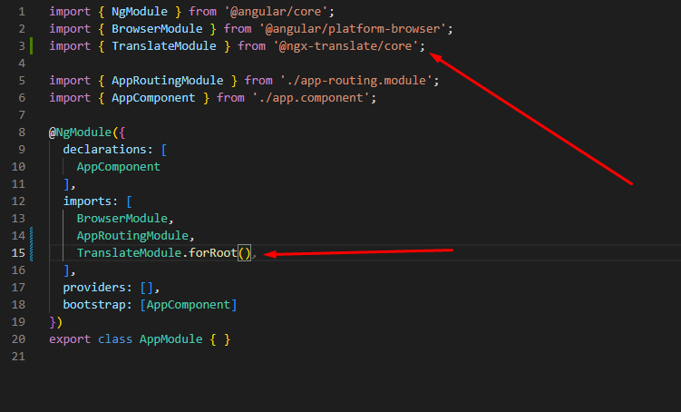http-loader:
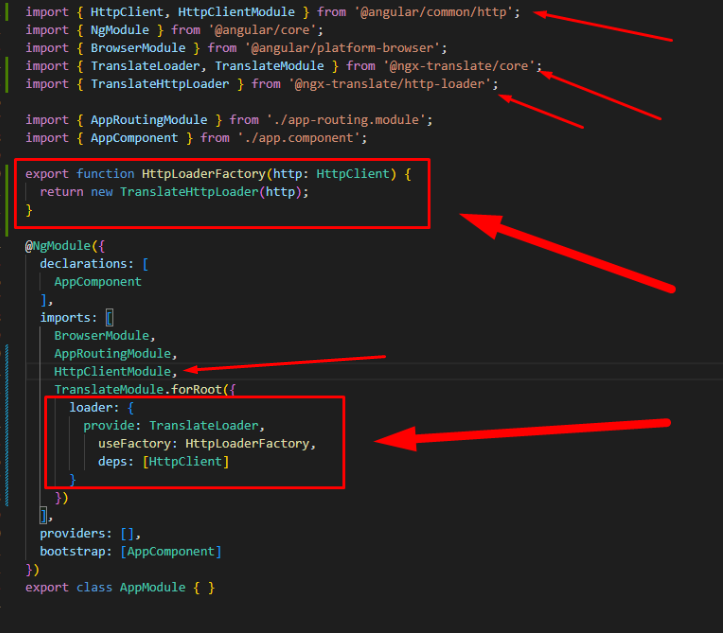HttpLoaderFactory:
export function HttpLoaderFactory(http: HttpClient) {
return new TranslateHttpLoader(http);
}loader:
loader: {
provide: TranslateLoader,
useFactory: HttpLoaderFactory,
deps: [HttpClient]
}Archivos de traduccion
Una vez hecha toda la configuración inicial tenemos que añadir los archivos donde iran nuestras traducciones, estos archivos iran colocados en la carpeta assets dentro de la subcarpeta i18n (esta carpeta tenemos que crearla):
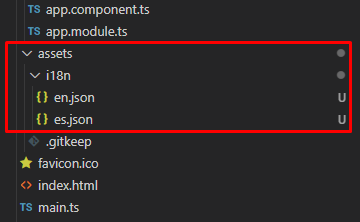En nuestro caso hemos creado dos archivos es.json y en.json para incluir traducciones en español e ingles, si queremos mas idiomas tenemos que incluir nuevos archivos.
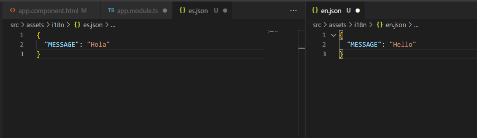Añadimos la configuración inicial en el constructor de nuestro app.component.ts:
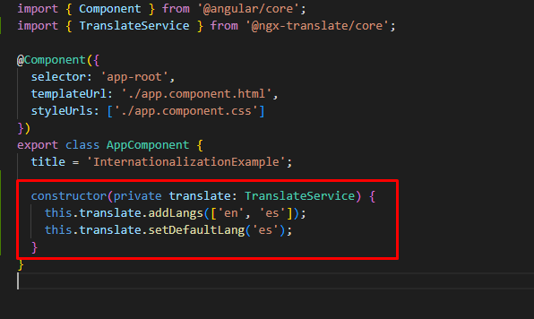Indicamos los lenguajes que vamos a usar, los nombres deben de coincidir con los archivos que hemos creado previamente.
Para realizar una traducción en un template podemos usar el pipe translate tal que así:

Esto nos mostrará lo siguiente en el navegador ya que hemos configurado el idioma como "es" inicialmente:
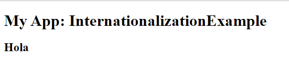Para cambiar el idioma por defecto durante la ejecución podemos hacer tal que así:
componente:
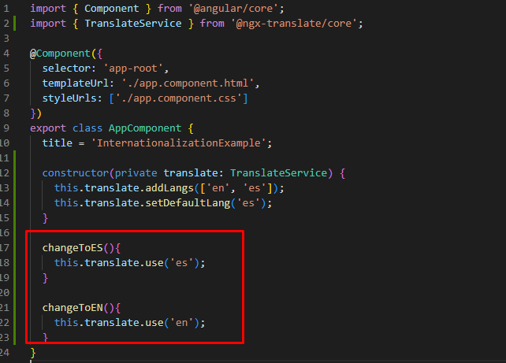template:

Con esto simplemente tenemos que pulsar uno de los dos botones y el idioma de la página cambiará:
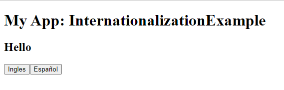Traducción en el componente
Si en vez de hacer la traducción en el template queremos hacerla directamente en el componente podemos hacerlo de dos maneras, de manera asincrona o de manera sincrona:
asincrona con la funcion get:
this.translate.get(['MESSAGE'])
.subscribe(translations => {
this.myMessage = translations['MESSAGE'];
});sincrona usando instant:
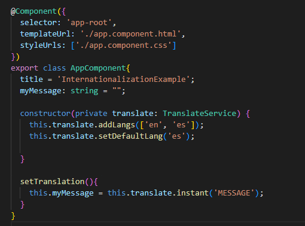IMPORTANTE: en este caso estamos usando una función que será llamada al pulsar un boton, si colocamos la traducción con el instant directamente en el ngOnInit no funcionaría porque el servicio de traducción aún no está inicializado (al hacer uso de llamadas http no se inicia en tiempo real de ejecución hay una cierta latencia)
En los dos casos anteriores tenemos el siguiente template, con el subscribe funciona sin más, con el instant tenemos que pulsar el botón para hacerlo funcionar
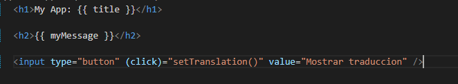Traducciones con interpolación
Si queremos podemos añadir una variable en medio del mensaje traducido, para ello en los archivos de traducción tenemos que añadir la siguiente sintaxis:
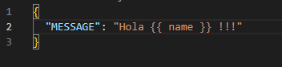Y a la hora de traducir, introducir la variable que queremos se incluya tal que así:
Con instant:
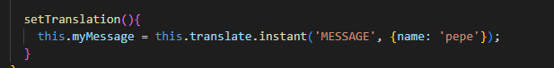Desde el template:
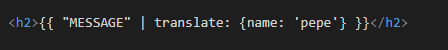En ambos casos se mostraría asi:
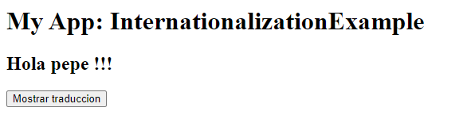Con la traducción asincrona no encontré ninguna manera de hacerlo.